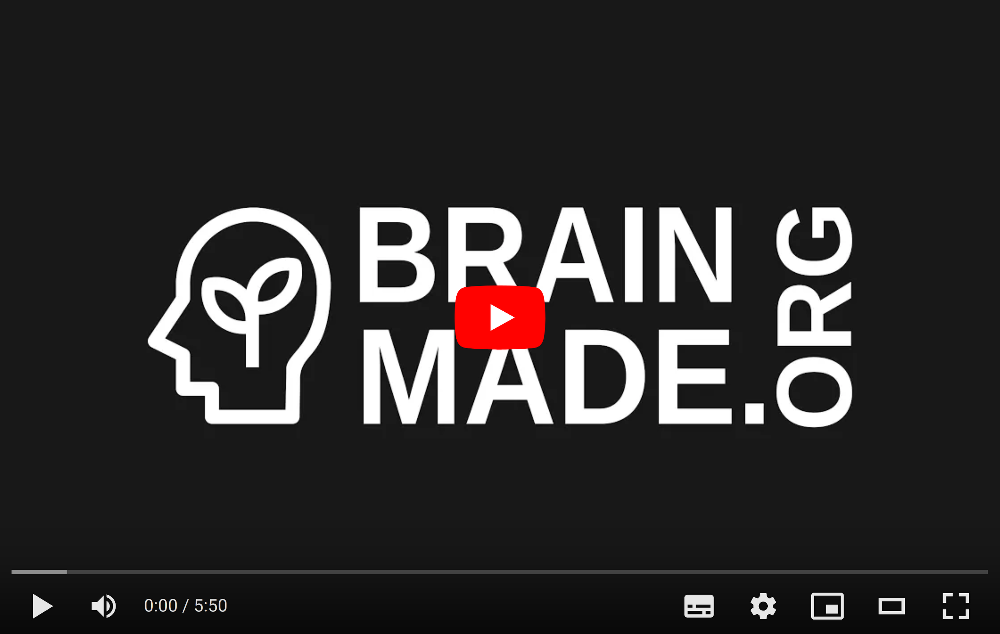

When you see this logo on any artwork, whether painting, poetry, or prose, you know that it was made by a human just like you.
The Brainmade mark can be attached to any work made mostly by you or your friends, not generative tools like GPT. It’s not anti-AI, it is a positive mark that celebrates human creation. It’s not AI = bad, it’s human = good.
There’s something transcendent and magical in knowing a human made the artwork I’m consuming, knowing they tried hard is part of the experience. It doesn’t have to be 100% human made (what would that even MEAN these days?), perhaps 90% human made.
Three examples of what this mark could apply to:
- Using, say, ChatGPT as a rhyming dictionary feels fine, but writing whole verses of your poem doesn’t.
- Using DALL-E to start brainstorming with 100 generated views of birds sitting on telephone lines seems fine, but getting it to paint large sections of your artwork doesn’t.
- Asking a text generator to give you 10 happy-sounding synonyms for despair sparks joy in me, but asking it to write your anti-transcendentalist masterpiece does not.
I hope the following video will explain in detail for making this clear, but the tl;dr is:
- I don’t hate AIs,
- I love humans!
Watch my short video here, or read on. 
About
I don’t need 100% human made, I perhaps need 90% human made. Three examples may make my thinking clearer:
- Using, say, chatgpt as a rhyming dictionary feels fine, but writing whole verses of your poem doesn’t.
- Using DALL-E to start brainstorming with 100 generated views of birds sitting on telephone lines seems fine, but getting it to paint large sections of your artwork doesn’t.
- Asking a text generator to give you 10 happy-sounding synonyms for despair sparks joy in me, but asking it to write your anti-trancendentalist masterpiece does not.
Using these tools to make more of the artwork you want is valid, but you’re not a creator, you’re still a consumer. I’m not sure exactly what ‘too much AI’ is, but just like your audience, I’ll know it when I see it.
I love knowing a human made the artwork I’m consuming.
There’s something there, something transcendent and magical.
I like that you tried hard, that’s part of the experience.
Downloads
White
{kind=link}
{kind=link}
Black
{kind=link}
{kind=link}
88x31 Buttons
{kind=link}
{kind=link}
Credits
- Logo based on “Human” by JunGSa from Noun Project
- And “seed” by Adrian Syauqi from Noun Project
Special thanks to everyone who workshopped the logo with me, especially super patron supporter Andrew Jackson. Andrew, I should be paying YOU!
About Me
I’m Tris, I’m a writer and producer of fast, technical videos, and [audiofiction and music.](https://namtao.com/ My first career was as a web developer, doing production on the side for 15 years, but in 2022 I accidentally became entirely self-employed thanks to the surprising success of my YouTube channel, No Boilerplate.
At heart I’m still a software developer, I’ll re-use 100 libraries to avoid writing 10 lines of code - standing on the shoulders of giants is the only way I know how I get around. But I’ve looked for a way to mark my videos and stories as being made by humans, not AI, and I couldn’t find one that works in exactly the way I want.
So here we are!